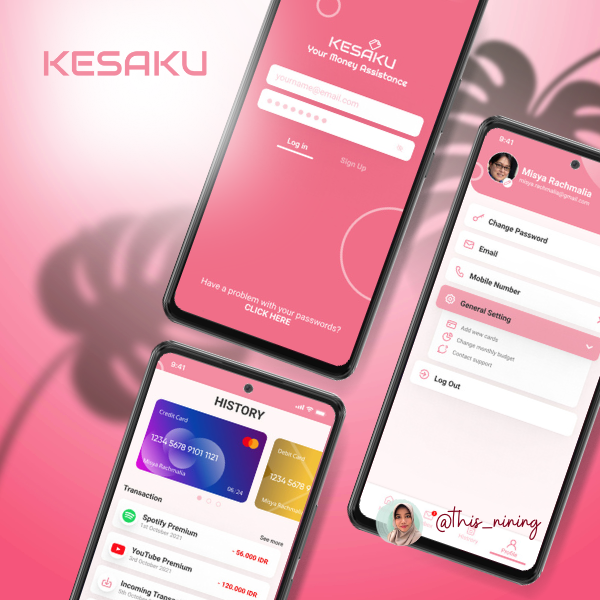

Supartiningsih (Nining)
🖋️ Summary
I am a profesional IT Engineer who work more than 10 years in this field. I am a honest person, responsible to my duty and cheerful.
🎓 Education
- Bachelor Degree of Computer Science - STMIK STIKOM Balikpapan
Vocational High School of Electronic & Informatics - STM Telkom Malang
💼 Work Experience
💻 Skills
- Software Developing: ⭐️ ⭐️ ⭐️ ⭐️
- Routing & Switching Cisco Network: ⭐️ ⭐️ ⭐️ ⭐️
- UI/UX Design: ⭐️ ⭐️ ⭐️ ⭐️ ⭐️
- Python Programming: ⭐️ ⭐️ ⭐️
📂 Portfolio

🏆 Awards & Certification
- Best Participant of ToT Broadband Telkomsel - 2007
- Best Leader #12 of TOP 15 Leader Oriflame Balikpapan - 2019 & 2020
- Cisco Troubleshoting Certification #12345567
- ICND Certification #24567890
💬 Language
- Bahasa Indonesia (native): ⭐️ ⭐️ ⭐️ ⭐️ ⭐️
- English (B1 Intermediate): ⭐️ ⭐️ ⭐️